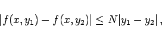
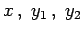
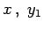
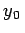
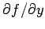

Inhalt Index DeskTop Bronstein

 Differentialgleichungen Gewöhnliche Differentialgleichungen Differentialgleichungen 1. Ordnung Existenzsatz, Richtungsfeld
Differentialgleichungen Gewöhnliche Differentialgleichungen Differentialgleichungen 1. Ordnung Existenzsatz, Richtungsfeld


wenigstens eine Lösung, die an der Stelle x = x0 den Wert y0 annimmt und in einem gewissen Intervall um x0 definiert und stetig ist, wenn die Funktion f(x,y) in einer Umgebung G des Punktes (x0,y0), die durch |x - x0| < a und |y - y0| < b festgelegt ist, stetig ist.
|  | (9.3) |
für alle  aus , wobei N nicht von  und y2 abhängen darf. Ist sie erfüllt, dann ist die Lösung von (9.2) eindeutig und eine stetige Funktion von . Die Erfüllung der LIPSCHITZ-Bedingung ist stets dann gegeben, wenn f(x,y) in dem betrachteten Gebiet eine beschränkte partielle Ableitung  besitzt. Im Abschnitt Singuläre Integrale und singuläre Punkte sind Fälle angeführt, in denen die Voraussetzungen des CAUCHYschen Existenzsatzes nicht erfüllt sind.